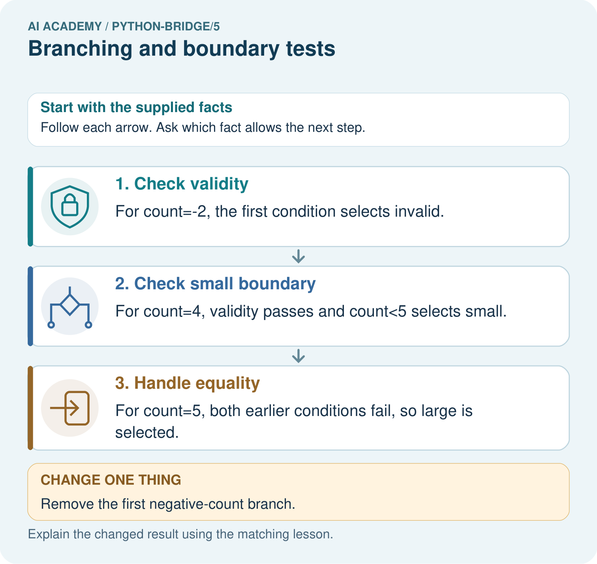

AI Academy · Python readiness bridge · Workbook
Branching and boundary tests
Learn to understand, design, build, test and explain AI systems responsibly.
Project: Python readiness portfolio
Workbook · 1 of 12
Recall and choose your starting point
Try the recall before opening notes. Then use a different colour or a labelled second line to correct your explanation.
Boolean conditions
Without opening the old lesson, explain one key idea from Boolean conditions. Give an example and a mistake that the idea helps you avoid.
Values variables and types
Without opening the old lesson, explain one key idea from Values variables and types. Give an example and a mistake that the idea helps you avoid.
Workbook · 2 of 12
Practise with fading help
Use W2: Trace the tested path for Branching and boundary tests. Record the answer once; the lesson and workbook refer to the same attempt.
| Given inputs | Procedure I chose | Middle steps | Result and check |
|---|---|---|---|
Workbook · 3 of 12
Individual reasoning check
Use the worked case for Branching and boundary tests. Proposed explanation: “Every condition in the chain always runs”. Decide whether this explanation is supported. Point to the step or supplied fact that decides; explain your repair if needed.
Workbook · 4 of 12
Independent transfer case
Independent case: Trace branch order
Predict the action for 30, then trace 29 and -1. Explain why validity is checked before the lamp decision.
reading = 30
if not 0 <= reading <= 100:
action = "invalid"
elif reading < 30:
action = "on"
else:
action = "off"
print(action)
Attempt this case before feedback. Record any help. Earlier examples below are further practice; a case already practised with feedback cannot establish fresh transfer.
Workbook · 5 of 12
W1 Explain the chain
Describe the purpose of if, elif and else in the worked duration sorter. Explain why print(label) is outside the indented branches.
Workbook · 6 of 12
W2 Trace the tested path
For -1, 12 and 13, record checked conditions, skipped conditions and the final label. Run each as a fresh script after predicting.
Workbook · 7 of 12
W3 Repair the overwritten result
Trace the two-independent-if example for -1. Identify which assignment overwrites the earlier label and make the smallest repair.
Workbook · 8 of 12
W4 Build a new sorter independently
Use an integer tiles count. Label a negative value Invalid, zero Empty, 1 through 6 Small and values above 6 Large. Write an ordered if elif else script and predict -1, 0, 1, 6 and 7. Include one print after the chain.
Workbook · 9 of 12
W5 Choose revealing regression tests
A repair changes the small-count condition from < 6 to <= 6. Name the case that exposes the original error and two different kinds of earlier cases to rerun.
Workbook · 10 of 12
Project checkpoint and reflection
Add a labelled branching and boundary tests evidence sheet to Python readiness portfolio. Show how you can trace the selected branch in an if elif else chain. Use the supplied fictional case and keep its inputs, intermediate steps, calculation or prediction, and limitation. Connect this record to last week’s record; a matching answer without a trace is insufficient.
Workbook · 11 of 12
Feedback, return check and learning record
| Evidence | My record |
|---|---|
| Worked alone / hint / model | |
| First step I repaired and why | |
| New case checked later; date and result | |
| What I can now explain without notes | |
| One remaining question |
Revisit this idea with your teacher after a delay. Familiarity is different from explaining and using it on a changed case.
Workbook · 12 of 12
Pictorial case practice: Branching and boundary tests
Check invalid values before branching. A toy shelf label uses fewer than five books as "small", otherwise "large", but negative counts are invalid.
Python 3: if count<0: label="invalid"; elif count<5: label="small"; else: label="large". Read as indented branches.

Trace -2, 4 and 5 through the branches. Explain why the negative check comes first and what label -2 gets if it is removed.
Support used: alone / hint / worked example. This record is practice evidence.
Project connection: For Python readiness before the Responsible Plant Classifier, retain a trace of the values, the predicted outputs and the changed-case explanation. Use actual Python 3 results to check the prediction after reasoning first.